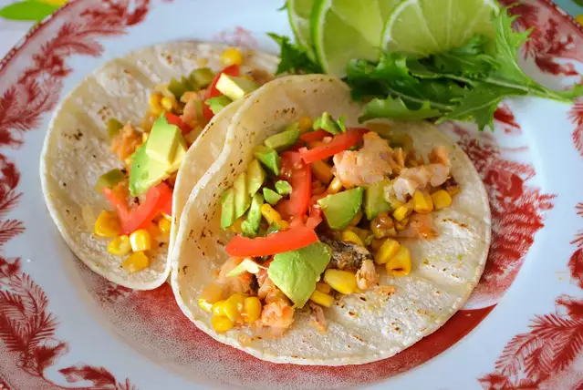

Fish Tacos!

Fish Tacos with Mango-Pineapple Slaw!
A beautiful blend of wonderful ingredients come together to make some absolutely delious fish tacos!
Ingredients
salt and ground black pepper to taste
1/4 cup reduced-fat mayonnaise
1 tablespoon ground black pepper
1/2 cup chopped fresh mango
1/2 cup chopped fresh pineapple
1/2 cup chopped red onion
1/4 cup chopped fresh cilantro
1 fresh jalapeno pepper, chopped
8 (8inch) flour tortillas
Steps
Preheat oven to 375 degrees F (190 degrees C).
Place cod fillets on a large sheet of aluminum foil; pour lemon juice over fish and season with salt and black pepper to taste. Fold the foil around the fish and seal to creat a pouch; place pouch in a baking dish.
Meanwhile, whisk vinegar, mayonnaise, sugar,1 tablespoon salt, 1 tablespoon black pepper, and garlic powder in a bowl until smooth. Combine cabbage, mango, pineapple, red onion, cilantro, and jalapeno in large bowl. Pour dressing over vegetables and fruit; toss to combine. Cover and refrigerate slaw until ready to serve.
Divide fish evenly among flour tortillas. Spoon slaw over fish to serve.
home